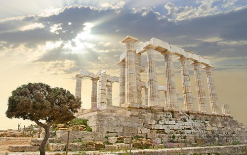

普罗米修斯
故事启示
返回
普罗米修斯故事人物简介： 普罗米修斯：普罗米修斯是古希腊神话传说中的提坦神。他创造了人，同时仿造音神，终于使人类发出声音来，而且教给人类知识和技术方法，同时他同众神之王宙斯及其对人类的统治霸权发起挑战。本视频就是讲普罗米修斯为了解除人类没有火种的困苦，不惜触犯天规，勇敢地盗取天火，从而给人类带来光明和智慧，并与宙斯进行不屈不挠斗争的动人传说，颂扬了普罗米修斯不畏强暴，为民造福不惜牺牲一切的伟大精神。 阿波罗：阿波罗为光明之神，他的别名是福玻斯，光明之意；他出生的提洛岛也是光明的意思。他在古希腊戏剧里普遍作为预言神，其最主要的神庙在德尔斐神谕所，发布预言用的三角鼎为其圣物。作为音乐神，他又有一圣物为七弦的里拉琴。古希腊有一系列抒情诗献给这位诗歌之神。他的名字中有毁灭邪恶者之意，作为驱除邪恶之神，他也是一位强力的远射战神，以银弓为标志。 宙斯：宙斯（古希腊语：Ζεύς、希腊语：Δίας、英语：Zeus），是古希腊神话中的众神之王，奥林匹斯十二主神之首的众神之神，统治宇宙万物的至高无上的主神（在古希腊神话中主神专指宙斯），人们常用“众神和人类的父亲”、“神王”来称呼他，是希腊神话诸神中最伟大的神。罗马神话中对应宙斯的神祇是朱庇特（Jupiter或Jove），被视为射手座的守护神。因为古希腊人崇拜宙斯，因此在神话里将宙斯说成是自己的祖先，奥林匹斯的许多神祇和许多希腊英雄都是他和不同女子生下的子女。他以霹雳为武器，维持着天地间的秩序，公牛和鹰是他的标志。他的兄弟波塞冬和哈迪斯分别掌管海洋和冥界。 赫拉克勒斯（Ηρακλής），是古希腊神话中最伟大的英雄。是主神宙斯与阿尔克墨涅之子，因其出身而受到宙斯的妻子赫拉的憎恶。他神勇无比、力大无穷，后来他完成了12项被誉为“不可能完成”的任务，除此之外他还解救了被缚的普罗米修斯，隐藏身份参加了伊阿宋的英雄冒险队并协助他取得金羊毛。赫拉克勒斯英明一世，却最终遭第二任妻子误会，并在他的衣服上涂了毒，难耐痛苦而自焚身亡，死后升入奥林匹斯圣山，成为大力神，他惩恶扬善，敢于斗争。在如今的西方世界，赫拉克勒斯一词已经成为了大力士和壮汉的同义词。